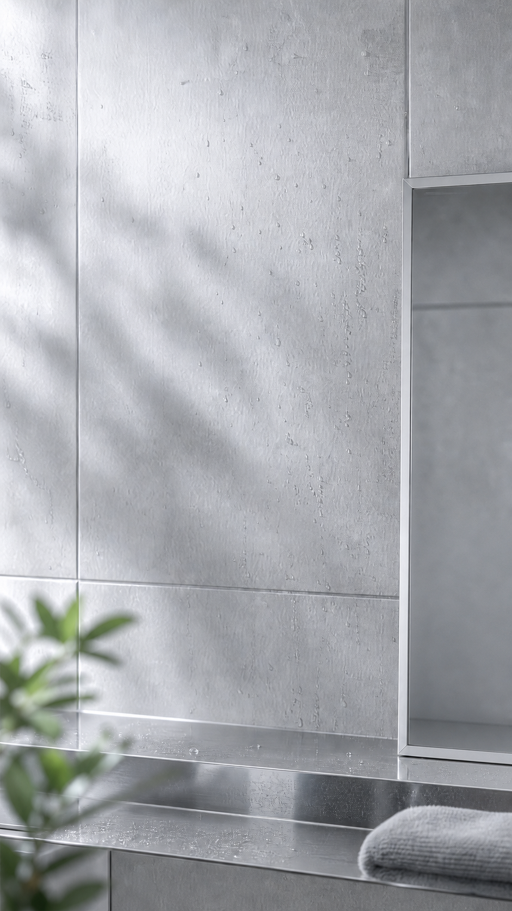
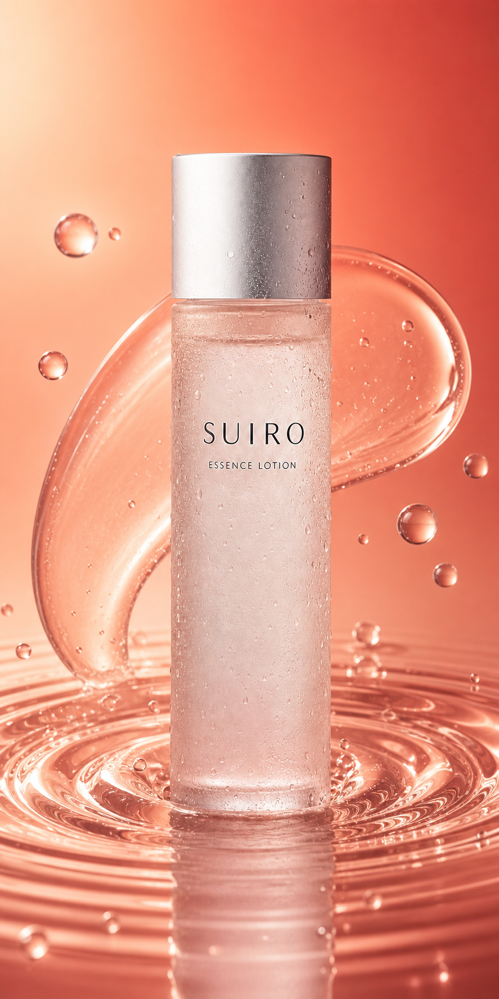
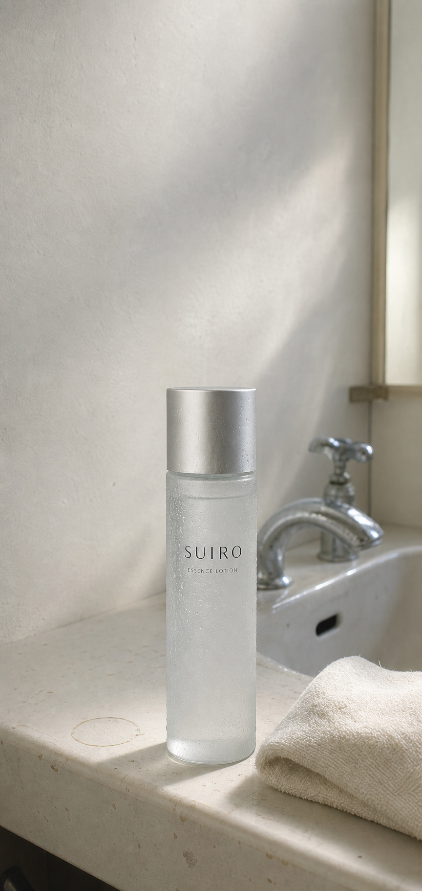

一度に多く取る
SUIROでは、一度にまとめず少量を取ります。

SUIRO ESSENCE LOTION
朝と夜、少量を2回に分けてなじませる。確認できている使い方を、ひとつずつ紹介します。

SUIRO ESSENCE LOTION
ROUTINE CHECK
SUIROでは、一度にまとめず少量を取ります。
SUIROは朝と夜に使います。
少量を取り、なじませる手順を2回行います。
SUIRO ROUTINE
特別な手順を増やすのではなく、少量をなじませ、もう一度同じ流れを行います。

BASIC METHOD
最初の少量を手のひらへ取ります。
手のひらで顔へなじませます。
2回目も少量を手に取ります。
同じように顔へなじませます。
朝も夜も、同じ手順で。
MORNING
洗面台で少量を手に取り、2回に分けてなじませます。

MORNING / NIGHT
表示は確認済みの使用方法を整理したものです。

TEXTURE
少量ずつ手のひらへ取り、顔へなじませます。
確認できる情報を、ひとつの画面に。
NIGHT
朝とは時間が変わっても、少量を2回に分ける手順は変わりません。

PRODUCT FACTS
商品種別
内容量
税込価格
香り
使用タイミング
使用方法
確認できていない情報や販売条件は掲載していません。

毎日続けるために、
使い方をシンプルに確認する。
商品仕様をもう一度。
FAQ
朝と夜に使います。
少量を2回に分けて顔へなじませます。
150mLです。
3,520円（税込）です。
無香料です。
できません。架空商品のデザイン確認用ページです。
SUIRO ESSENCE LOTION
SUIROの商品情報を確認する
ORDER DEMO
この画面は入力・送信を試すためのデモです。注文、決済、個人情報の保存は行いません。
送信内容は外部へ送られず、ページを閉じると消えます。